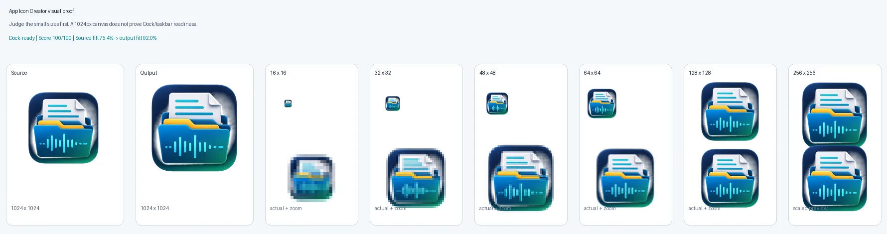
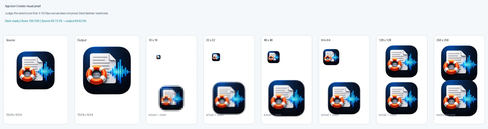
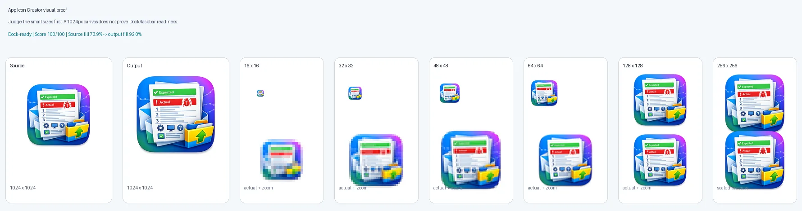

Hidden padding changes perceived size
Two icons can share the same canvas size while one looks much smaller because the visible artwork is inset inside transparent or background padding.
App Icon Creator turns a logo PNG into standardized macOS and Windows icon assets. Open or drop a source image, correct the visible artwork size, generate icon files, and inspect proof sheets before the app goes into the Dock, taskbar, website, installer, or storefront.
Available now for macOS and Windows as separate $9.99 direct-download products through secure Lemon Squeezy checkout. The macOS download is a signed and notarized .pkg installer. The Windows download is an unsigned setup installer, so Windows SmartScreen may show a warning.
The release problem that created this product was simple: icons were technically 1024 x 1024, but they did not occupy the same usable visual area in the Dock and taskbar.
Two icons can share the same canvas size while one looks much smaller because the visible artwork is inset inside transparent or background padding.
An icon that looks fine at 1024 px may collapse at 64 px, 32 px, or 16 px. Proof sheets force that problem into view.
Mac Dock icons, Windows taskbar icons, installer icons, website logos, and storefront media should all come from a repeatable source-of-truth export.
The app is built for the moment before release when you need confidence that the icon will look right in real operating-system surfaces.
Start with the logo or app icon artwork you want to standardize for release.
Check how much of the 1024 x 1024 canvas is real artwork versus padding.
Create Mac and Windows icon outputs from the corrected source image.
Use contact sheets and readiness notes to catch scale, edge, and contrast problems before shipping.
The current product interface exposes source loading, output generation, and review evidence in one utility window.
App Icon Creator was exercised against ClipScript, Transcript Rescue, and Repro Pack so the product page can show real proof assets rather than a generic mockup.



The product is intentionally narrow: take a source image, produce platform icon files, and produce enough evidence to trust the result.
A corrected 1024 x 1024 PNG becomes the durable visual source for website, app, and storefront use.
Export `.icns` for macOS and `.ico` for Windows from the same corrected source image.
Generate review artifacts that show small-size readability, visible bounds, and readiness before the release package is built.
App Icon Creator is sold through secure Lemon Squeezy checkout as separate $9.99 desktop products for macOS and Windows. Buyers receive the installer for the platform they choose, plus download and support instructions in the order flow. The macOS download is signed and notarized; the Windows setup installer is currently unsigned, so Windows SmartScreen may show a warning.